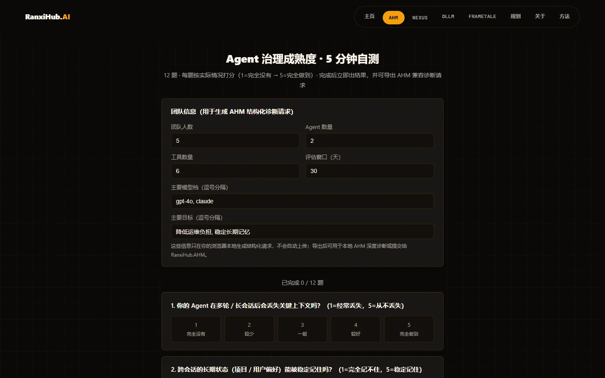
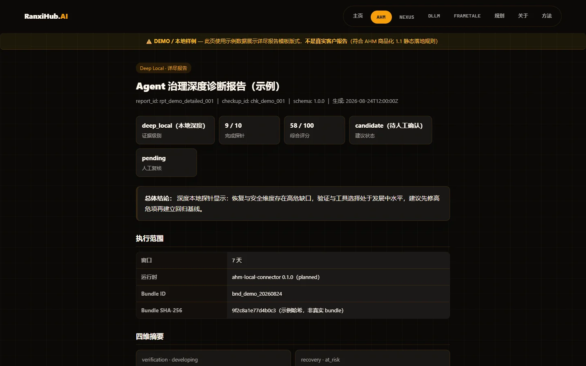
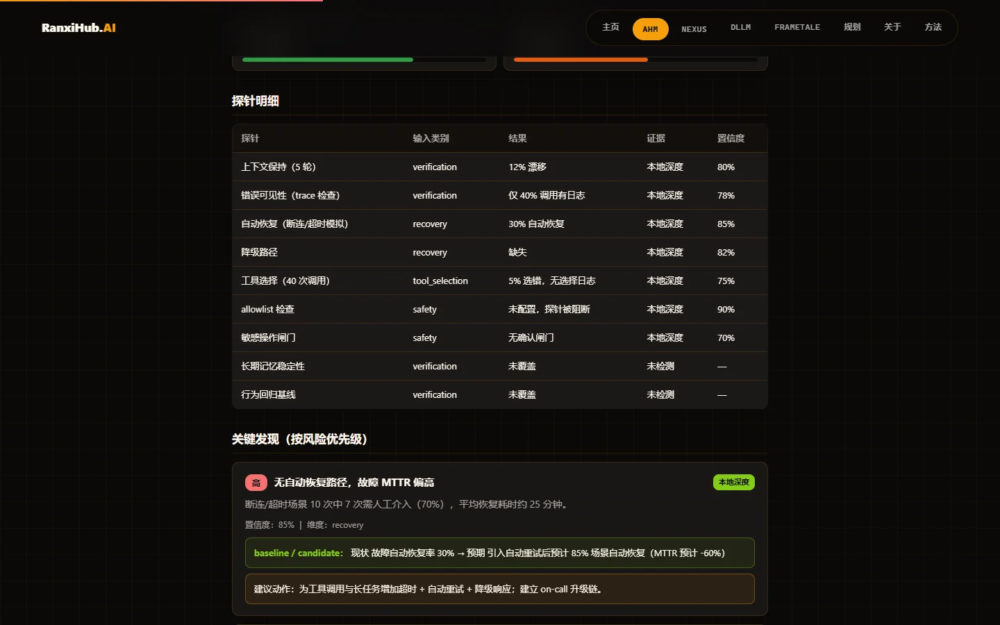

One structured diagnosis turns it from a toy into a shippable, observable, regressive-testable engineering product—
no cloud lock-in, no source code sold, built for small teams.
Below are real page screenshots from this site (sample data, not real customer reports). Left: the 5-minute self-test form; middle: the deep-diagnosis report's scorecard and overall conclusion; right: per-probe detail and key findings ranked by risk.



Screenshots use sample data; no real customer reports are shown.
Teams of 3–20 have no governance function—big-vendor tools lock you into the cloud and cost more, generic consulting lacks a framework, and open-source tools don't understand memory semantics.
Key context is lost across sessions; users repeat themselves and the experience breaks down.
No traces in production; when something fails you can only guess, often debugging overnight.
The same input works today and fails tomorrow—no regression testing, no clear explanation, no confidence to ship.
Based on your real code and production behavior, we review your Agent's governance maturity item by item.
Per-item scores + a governance roadmap + a prioritized checklist your team can act on directly.
An online session covering the report's conclusions and first steps (included free).
One complete diagnosis: interview + report + walkthrough
Final price and deposit TBD; payment method: Alipay; refund terms will be published alongside final pricing.
Free self-test triage and report-template viewing are self-serve; local probes (Connector planned, self-serve once available); booking a deep diagnosis and delivery are confirmed manually.
12 questions in 5 minutes; generates a request_id and a structured diagnostic request.
The planned local Connector will run limited probes in your environment (not yet available); credentials stay local.
One page: evidence level, key findings, items not checked, and next steps.
Pay a deposit to reserve a slot (amount TBD); scheduling begins after an NDA is signed.
Deep-probe bundle → report draft (candidate) → human-confirmed accepted.
Start with the Free Self-Test → View Pricing
See what the report looks like (sample data): Brief Report (DEMO) · Detailed Report (DEMO)
A free 1:1 can't guarantee delivery quality. The self-test + 15-minute results walkthrough are already included in the diagnosis; if you're unsatisfied after the interview, you can request a deposit refund within 24 hours as agreed.
The diagnosis runs against your own stack; we read only and copy nothing. An NDA protects both parties throughout, and any case study is anonymized and requires your written consent before publication.
The report includes advanced options: architecture review and guided controlled integration (price TBD), optional, not required.
We don't sell tools and don't lock you into the cloud. We teach you how to govern your Agent with methodology, and when useful we'll point out which open-source tools are worth choosing—complementary, not a replacement.